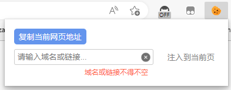

使用说明
把需要拷贝的cookie所在目标网址(如：https://www.baidu.com), 也可以是域名形式（如：baidu.com）, 或者是IP形式（如：10.199.20.84)复制到输入框后（或点击拷贝当前网址一键填入），点击注入按钮，就会把该域名的所有cookie导入到当前操作页面, 如下图：

有时会出现拷贝某个cookie失败的情况，一般是因为该cookie sameSite为strict或者是设置了secure。出于安全策略，这类cookie目前不可复制
F12打开开发者工具，选择Application下的cookie，查看是否已成功注入